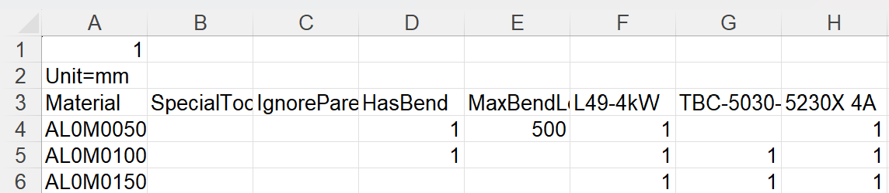

Διαδρομές
Ανάλογα με την άδειά σας, το TruSmartCAM θα διαθέτει ένα προεπιλεγμένο σύνολο μηχανών CAM και διαμορφώσεων διαδρομών. Μπορείτε να προσαρμόσετε αυτές τις διαμορφώσεις ώστε να ταιριάζουν στις συγκεκριμένες ροές εργασίας παραγωγής σας.

Στη σελίδα διαδρομών, οι μηχανές αναπαρίστανται ως σταθμοί επεξεργασίας, καθένας από τους οποίους αναγνωρίζεται από μια εικόνα και ένα όνομα.
Οι διαδρομές συνδέουν τους σταθμούς, δείχνοντας τις πιθανές διαδρομές ροής εργασίας που μπορεί να ακολουθήσει ένα εξάρτημα από την αρχή έως το τέλος. Μπορείτε να δείτε τις ιδιότητες ενός σταθμού τοποθετώντας τον δείκτη του ποντικιού πάνω από τον σταθμό.
Κάνοντας κλικ σε έναν σταθμό ανοίγει ένα παράθυρο με λεπτομερείς πληροφορίες σχετικά με τον σταθμό αυτόν, συμπεριλαμβανομένου του ονόματος, του τύπου και της κατάστασης διαθεσιμότητάς του.
-
Για να επεξεργαστείτε τη διαθεσιμότητα ενός σταθμού, κάντε κλικ στον σταθμό και εναλλάξτε το πλαίσιο ελέγχου Enabled στο παράθυρο.
Εξαγωγή/Εισαγωγή διαμορφώσεων διαδρομών
Η λειτουργία Export/Import επιτρέπει στους χρήστες να αποθηκεύουν τις τρέχουσες διαμορφώσεις διαδρομών τους και να τις εφαρμόζουν σε άλλα έργα ή στιγμιότυπα.
Εξαγωγή διαδρομών CAD
Κάντε κλικ στο Export CAD routes… για να αποθηκεύσετε όλους τους τρέχοντες κανόνες συνθηκών διαδρομής σε ένα αρχείο CSV.

Το CSV παραθέτει τα υλικά και τις συνθήκες διαδρομής τους. Οι στήλες αντιπροσωπεύουν ονόματα μηχανών και συνθήκες (π.χ. Material, SpecialTool, HasBend, MaxBendLength). Η τιμή 1 υποδηλώνει δρομολόγηση προς μια μηχανή· ένα κενό κελί σημαίνει καμία δρομολόγηση.
Μπορείτε να τροποποιήσετε αυτό το CSV και να το εισαγάγετε ξανά στο σύστημα.
Εισαγωγή διαδρομών CAD
Χρησιμοποιήστε το Import CAD routes… για να εφαρμόσετε ένα τροποποιημένο αρχείο CSV.
| Πριν από την εισαγωγή, εκτελέστε το Reset CAD routes για να διαγράψετε τις υπάρχουσες διαμορφώσεις. |
Το σύστημα διαβάζει το αρχείο και ενημερώνει τις συνθήκες διαδρομής. Οι κανόνες μπορούν να περιλαμβάνουν συνθήκες όπως HasBend και MaxBendLength.

Εάν HasBend = 1, ο κανόνας εφαρμόζεται σε εξαρτήματα με κάμψεις.
Εάν MaxBendLength =1, ο κανόνας περιορίζει περαιτέρω βάσει του μεγαλύτερου μήκους κάμψης του εξαρτήματος.
Το εξάρτημα 00.13 έχει μεγαλύτερη κάμψη 500 mm. Ταιριάζει με τον πρώτο κανόνα, οπότε το TBC-5030-V2 εξαιρείται.

Επαναφορά διαδρομών CAD
Χρησιμοποιήστε το Reset CAD routes για να διαγράψετε όλες τις υπάρχουσες διαμορφώσεις πριν από την εισαγωγή ενός νέου CSV.
| Εάν κάνετε εισαγωγή χωρίς επαναφορά, οι παλιοί κανόνες ενδέχεται να έρθουν σε σύγκρουση με τους νέους. |